Mẫu 5 video top; chưa có đối chứng trung bình/thấp, không suy ra nguyên nhân thành công · khung hình và lời thoại tách bằng ffmpeg + whisper
Nhịp hình0,6s/beat7 beat/phút · có thể lẫn chữ di chuyển
3 giây đầu0 beattrung vị các video top
Kiểu vào hìnhcắt cứng33,3% số beat
Phụ đềkhông thấykhông có dải chữ đổi đều
Tốc độ đọc236 âm tiết/phútđoạn transcript phủ 91,5% thời lượng (không đo khoảng nghỉ)
Độ to-16,1 LUFSngôn ngữ: vi
Đã xem grid khung hình và lời thoại của 5 video top: VNM 778k, FPT 422k, mẹo NHNN 62k, VSC 29,5k, họ Vin 12,5k. Cả 5 video dùng cùng một khuôn đồ hoạ. Mẫu chỉ gồm video top, chưa có video view thấp để đối chứng.
Hình ảnh
- Motion graphics dữ liệu 100%, không có người thật. Nền xanh navy đậm có lưới ô vuông mờ, giữa khung có vầng sáng vàng. Màu nhấn là vàng gold, xanh lá cho số tăng, đỏ cho số giảm.
- Khung cố định: góc trên trái có badge mã cổ phiếu ("VNM · HOSE", "FPT · HOSE"; bài vĩ mô thì ghi "MẸO · Vĩ mô"), góc trên phải có logo "Cafe Chứng". Bên dưới badge là nhãn chương đánh số ("01 Mở đầu", "02 Câu hỏi", "06 Templeton", "08 Công bằng", "09 Lưu ý"). Mỗi video được chia thành khoảng 8–10 chương ngắn.
- Chất liệu: số đếm cỡ lớn chạy từ 0 lên giá trị thật (100 triệu, 145.000đ, 21%), thanh tiến độ, nến Nhật tự vẽ dần từng cây, đồng hồ kim (gauge), thẻ so sánh "5 năm trước → Hôm nay ?", cái cân, icon 3D (túi tiền, hộp sữa VNM, toà nhà Ngân hàng Nhà nước, con tàu VSC). Ảnh thật chỉ xuất hiện ở bài họ Vin (chân dung kèm logo các công ty).
- Ẩn dụ hình ảnh bám theo câu chữ: "con tàu VSC quay về điểm xuất phát… kéo còi" thì vẽ con tàu và chữ "TÚUT!". "Thị trường giá lên sinh ra trong bi quan…" thì vẽ đường cong có 4 điểm Bi quan → Hoài nghi → Lạc quan → Hưng phấn.
- Nhịp đổi hình: không có cắt cảnh (
cuts = 0). Hình liên tục được dựng thêm: số chạy, nến mọc, thẻ trượt vào. Cứ khoảng 0,5–1 giây lại có một phần tử mới. Các phần tử chồng dần lên nhau trong một chương, sang chương mới thì khung được xoá trắng. Bộ đo beat chỉ bắt được 5,6–12,8 beat/phút (medianBeat 0,4–1,7s). Con số này thấp hơn nhịp thực tế vì các chuyển động liên tục (đếm số, vẽ nến) không được tính thành beat riêng.
Chữ và phụ đề
- Phụ đề karaoke ở 1/3 dưới khung, căn giữa, chữ trắng đậm 2–3 dòng. Từ đang đọc được tô trắng, từ chưa đọc để xám, từ khoá chuyển sang vàng (con số, tên mã, "quốc dân", "bất ngờ"). Mỗi lần hiện nguyên một cụm câu. Bộ đo không nhận ra dải phụ đề (
caption = null) vì chữ được tô dần từng từ chứ không đổi cả cụm cùng lúc. Grid xác nhận dải này nằm cố định một chỗ. - Tiêu đề phụ nhỏ trên hình chính lặp lại ý của câu ("Giá mua được khuyên", "Tỷ trọng vốn hóa thị trường"), giúp người xem tắt tiếng vẫn hiểu.
- Khung đầu (hook.jpg) chỉ có một chữ/số rất lớn màu vàng ("FPT", "VSC", "100 triệu đồng", toà nhà NHNN), không đặt tiêu đề dài.
Lời và nhịp kể
- Câu mở đầu dạng giả định hoặc tình huống cá nhân, có một con số cụ thể:
- "5 năm trước, bạn bỏ 100 triệu vào Vinamilk, cổ phiếu quốc dân của người Việt. Hôm nay, bạn có bao nhiêu?" (778k)
- "Có người từng khuyên tôi mua FPT ở giá 145.000 đồng. Nếu khi ấy tôi nghe theo, tài khoản của tôi bây giờ sẽ ra sao?" (422k)
- "Có một cổ phiếu từng khiến rất nhiều người tiếc nuối vì không mua, nhưng giờ đây lại chẳng mấy ai muốn nhắc đến." (29,5k)
- Bài mẹo (62k) mở bằng lời hứa: "Mẹo nhìn động thái của Ngân hàng Nhà nước để dự đoán hướng đi của thị trường chứng khoán".
- Bài họ Vin (12,5k) mở thẳng bằng số liệu "Năm 2025, VIC, VHM và VRE chỉ chiếm 21% vốn hóa…", không có câu hỏi hay tình huống. Đây là bài view thấp nhất trong 5 bài, nhưng mới là 1 bài nên chưa đủ để kết luận.
- Hình khớp với lời: con số trên màn hình đếm lên đúng lúc giọng đọc tới số đó (0 → 91 → 100 khi đọc "100 triệu"). Thẻ "AI", "Chip bán dẫn", "Chuyển đổi số" bật ra theo từng từ được đọc.
- Kịch bản: câu hỏi mở → bối cảnh và số liệu → khúc ngoặt ("Nhưng…", "Và đây là hiện tại") → bài học được đánh số (Thứ nhất, Thứ hai, Cuối cùng) → câu hỏi kéo bình luận ("Bạn chọn khoản lãi đều hay chấp nhận biến động…?", "Comment kể mình nghe với") → câu miễn trừ "không phải khuyến nghị đầu tư".
- Giọng: giọng đọc thuyết minh (chưa nghe trực tiếp nên chưa xác định là người thật hay TTS), kể theo ngôi "tôi/mình" như chuyện cá nhân. Tốc độ 207–257 âm tiết/phút (khoảng 3,5–4,3 âm tiết/giây). Âm lượng -15 đến -17 LUFS. 78% video dùng "âm thanh gốc".
- Độ dài 51–122s. Bài 778k là bài ngắn nhất (51s).
Áp dụng cho DSC
- Format dùng được ngay:
shorts-kinetic (skill dsc-shorts). Các cue big_counter, ab_compare, question, list, outro_cta khớp gần như 1:1 với thẻ "100 triệu → ?", gauge và bài học đánh số. Biểu đồ nến hoặc thanh tỷ trọng thì ghép từ dataviz (line, counter, bar). - Nên giữ: nhãn chương đánh số ở góc trên (giúp người xem biết mình đang ở đâu trong video dài 60–120s), badge mã cổ phiếu cố định, số đếm chạy khớp với lời đọc, phụ đề karaoke tô vàng từ khoá.
- Nên thay hoặc thêm: Câu miễn trừ nên đặt ở cuối giống họ, không làm chậm hook.
778k view · Giải thích về VNM trong 1 phút
3 giây đầu nói“5 năm trước, bạn bỏ 100 triệu vào Vinamil, cổ phiếu”
beat 0,8s0 beat trong 3s đầu236 âm tiết/phút51s-16,1 LUFS
Beat đầu: 0,0s cắt cứng “5” → 43,9s trượt phải “họa,” → 44,3s cắt cứng “liệu” → 45,1s vẽ dần “phải” → 45,5s cắt cứng “khuyến” → 46,3s vẽ dần “tư.” → 48,4s vẽ dần “biến” → 49,5s mờ dần “năng”
Khung hình (7 lưới) & lời thoại
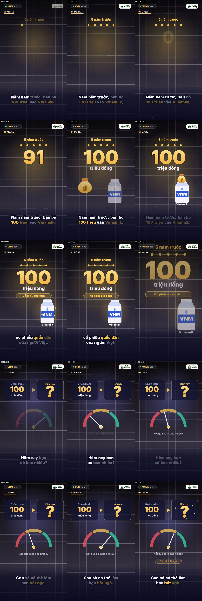
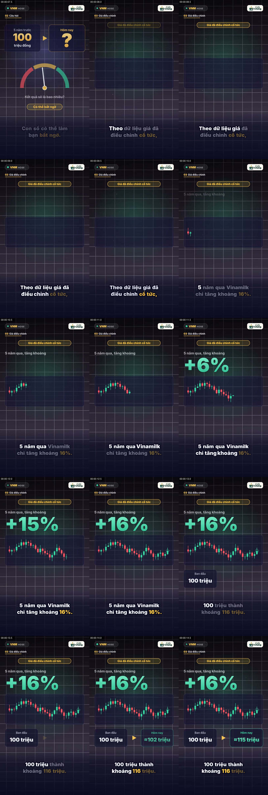
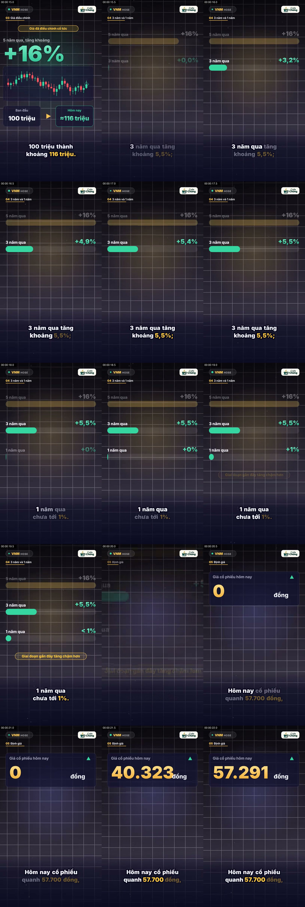
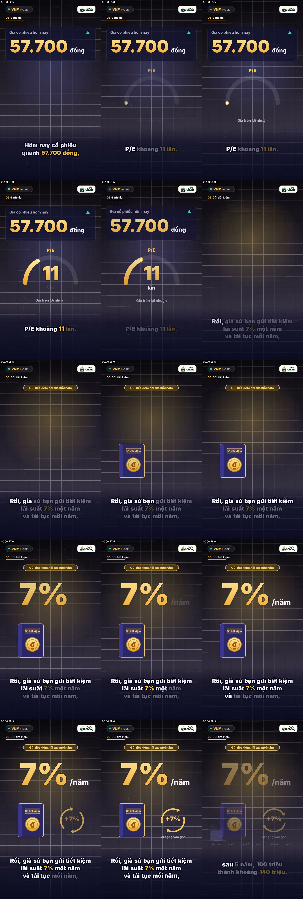
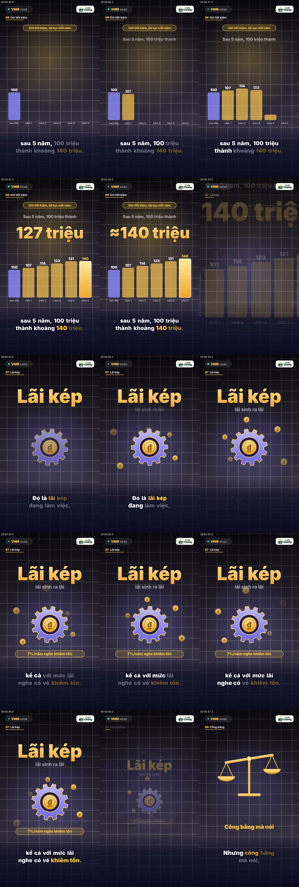
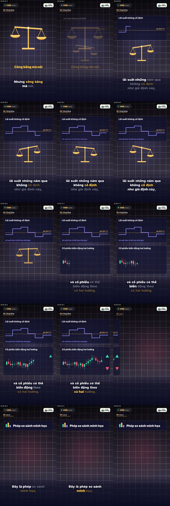
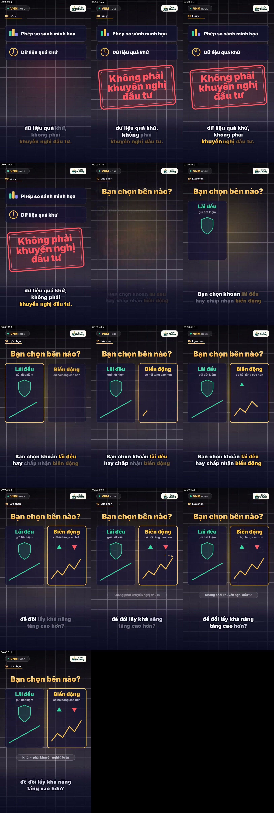
5 năm trước, bạn bỏ 100 triệu vào Vinamil, cổ phiếu quốc dân của người Việt. Hôm nay, bạn có bao nhiêu? Con số có thể làm bạn bất ngờ. Theo dữ liệu giá đã điều chỉnh cổ tức, 5 năm qua, Vinamil chỉ tăng khoảng 16%, 100 triệu thành khoảng 116 triệu, 3 năm qua tăng khoảng 5,5%, 1 năm qua chưa tới 1%. Hôm nay, cổ phiếu quanh 57.700 đồng, B gạch chéo E khoảng 11 lần. Rồi, giả sử bạn gửi tiết kiệm lãi suất 7% một năm và tái tục mỗi năm, sau 5 năm, 100 triệu thành khoảng 140 triệu. Đó là lãi kép đang làm việc, kể cả với mức lãi nghe có vẻ khiêm tốn. Nhưng công bằng mà nói, lãi suất những năm qua không cố định như giả định này và cổ phiếu có thể biến động theo cả 2 hướng. Đây là phép so sánh minh họa, dữ liệu quá khứ, không phải khuyến nghị đầu tư. Bạn chọn khoản lãi đều hay chấp nhận biến động để đổi lấy khả năng tăng cao hơn?
3 giây đầu nói“Có người từng khuyên tôi mua FPT ở giá 145.000”
beat 0,6s0 beat trong 3s đầu220 âm tiết/phút122s-16,1 LUFS
Beat đầu: 0,0s cắt cứng “Có” → 10,3s trượt trái “trường” → 31,2s cắt cứng “em” → 31,4s pop (phóng to) “mua” → 31,9s trượt trái “chắc” → 32,5s trượt phải “Tôi” → 33,1s cắt cứng “cãi” → 33,5s vẽ dần “về”
Khung hình (9 lưới) & lời thoại
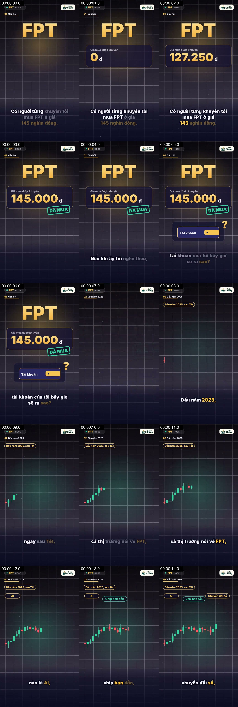
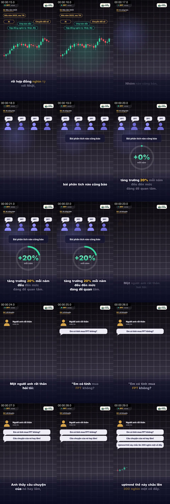
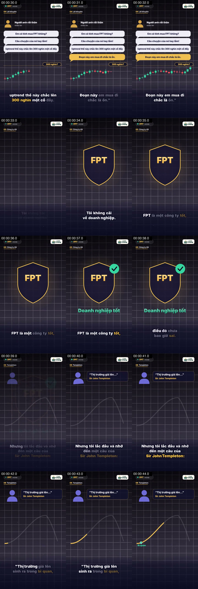
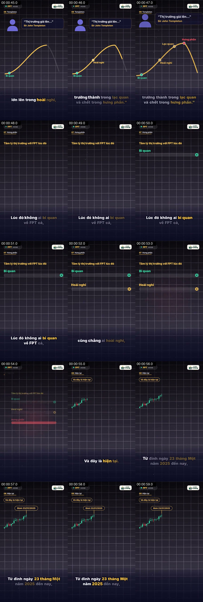
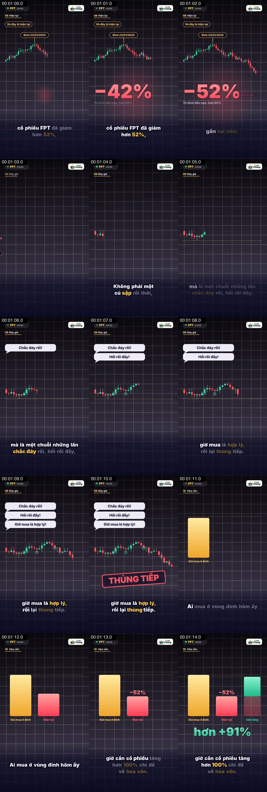
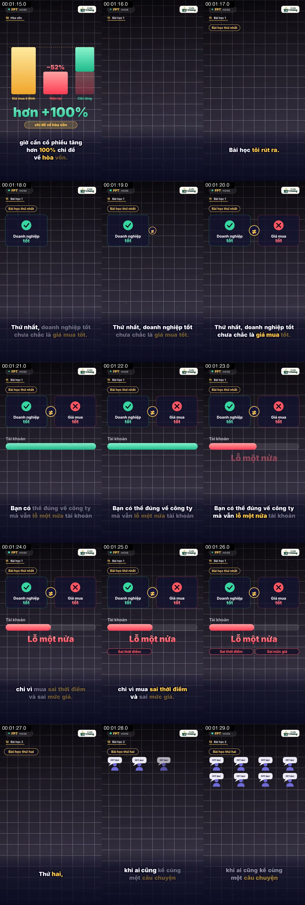
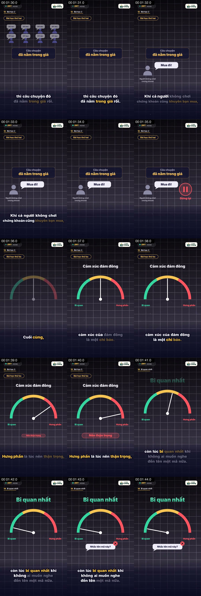
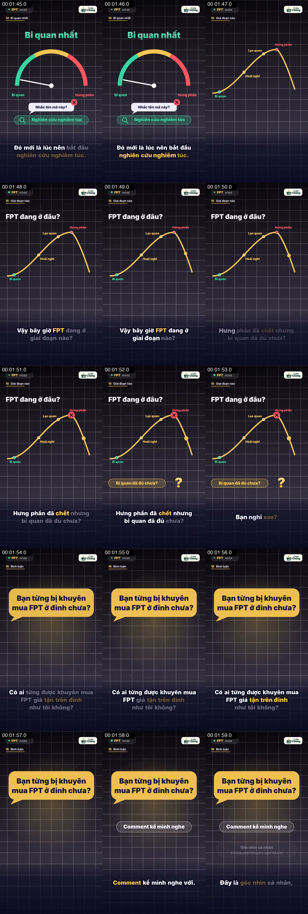
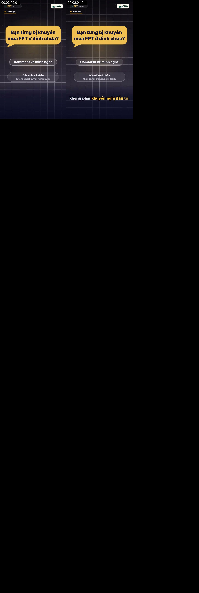
Có người từng khuyên tôi mua FPT ở giá 145.000 đồng Nếu khi ấy tôi nghe theo, tài khoản của tôi bây giờ sẽ ra sao? Đầu năm 2025, ngay sau Tết, cả thị trường nói về FPT Nào là AI, chip bán dẫn, chuyển đổi số, rồi hợp đồng nhìn tỷ với Nhật, với Mỹ Nhóm nào cũng bàn, bài phân tích nào cũng bảo Tăng trưởng 20% mỗi năm đều đến mức đáng để quan tâm Một người Anh rất thân hỏi tôi Em có tính mua FPT không? Anh thấy câu chuyện của nó hay lắm Uptrend thế này chắc lên 300.000 một cổ đấy Đoạn này em mua đi, chắc là ổn Tôi không cãi về doanh nghiệp FPT là một công ty tốt, điều đó chưa bao giờ sai Nhưng tôi lắc đầu và nhớ đến một câu của Sir John Templeton Thị trường giá lên sinh ra trong bi quan Lớn lên trong hoài nghi, trưởng thành trong lạc quan và chết trong hương phấn Lúc đó không ai bi quan về FPT cả Cũng chẳng ai hoài nghi, chỉ có hương phấn Và đây là hiện tại Từ đỉnh ngày 23 tháng 1 năm 2025 đến nay Cổ phiếu FPT đã giảm hơn 52% Gần 2 năm Không phải một cú sắp rồi thôi Mà là một chuỗi những lần chắc đáy rồi Hồi rồi đấy, giờ mua là hợp lý Rồi lại thủ tiếp Ai mua ở vùng đỉnh hôm ấy Giờ cần cổ phiếu tăng hơn 100% Chỉ để về hòa vốn Bài học tôi rút ra Thứ nhất, doanh nghiệp tốt Chưa chắc là giá mua tốt Bạn có thể đúng về công ty mà vẫn lỗ một nửa tài khoản Chỉ vì mua sai thời điểm và sai mức giá Thứ hai, khi ai cũng kể cùng một câu chuyện Thì câu chuyện đó đã nằm trong giá rồi Khi cả người không chơi trứng khoán cũng khuyên bạn mua Hãy dừng lại một nhịp Cuối cùng, cảm xúc của đám đông là một chỉ báo Hưng phấn là lúc nên thận trọng Còn lúc bi quan nhất Khi không ai muốn nghe đến tên một mã nữa Đó mới là lúc nên bắt đầu nghiên cứu nghiêm túc Vậy bây giờ FPT đang ở giai đoạn nào? Hưng phấn đã chết Nhưng bi quan đã đủ chưa? Bạn nghĩ sao? Có ai từng được khuyên mua FPT giá tận trên đỉnh như tôi không? Comment kể mình nghe với Đây là góc nhìn cá nhân Không phải khuyến nghị đầu tư
3 giây đầu nói“Mẹo nhìn động thái của Ngân hàng Nhà nước để dự đoán hướng đi của thị trường chứng”
beat 0,4s0 beat trong 3s đầu251 âm tiết/phút77s-16,1 LUFS
Beat đầu: 0,0s cắt cứng “Mẹo” → 46,7s trượt trái “nước” → 48,7s trượt trái “tỷ” → 49,2s cắt cứng “phiên” → 49,5s trượt phải “phiên” → 49,9s mờ dần “trường” → 50,3s cắt cứng “chứng” → 50,6s trượt trái “khoán”
Khung hình (11 lưới) & lời thoại
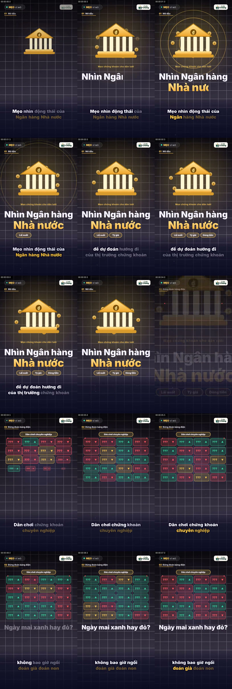
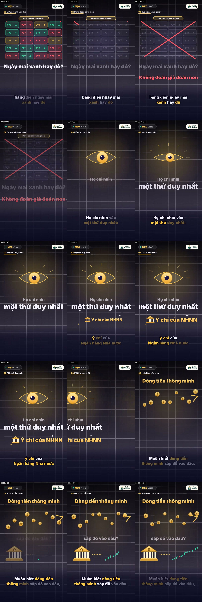
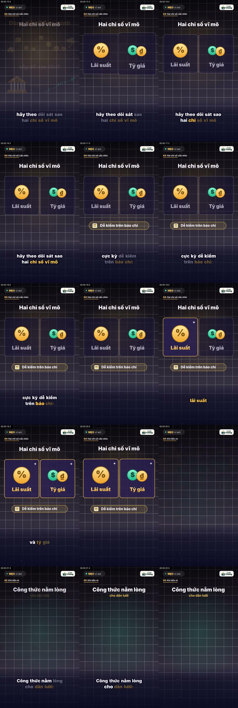
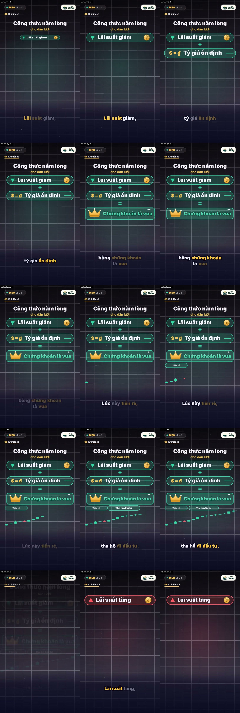
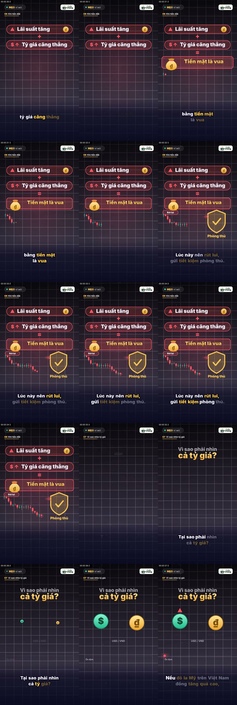
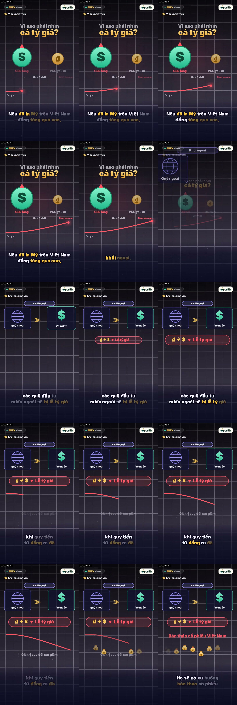
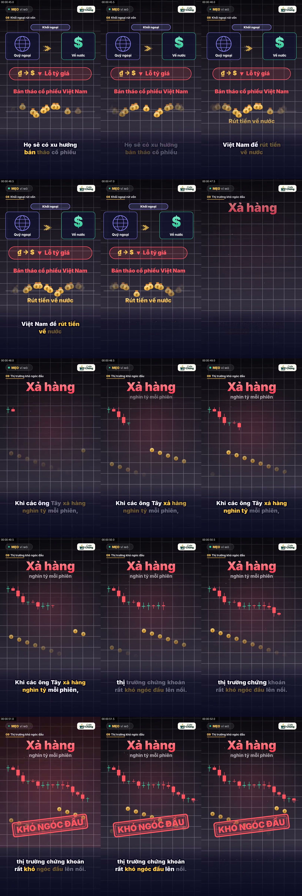
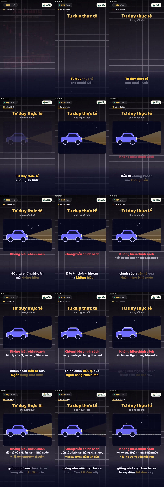
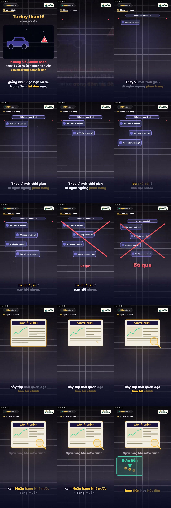
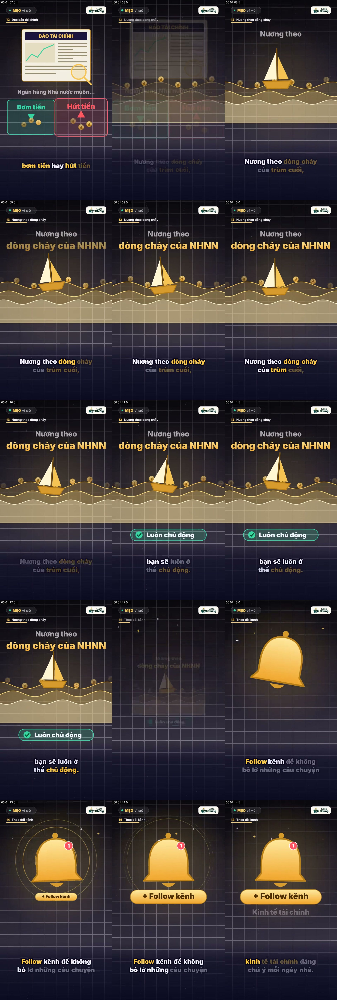
Mẹo nhìn động thái của Ngân hàng Nhà nước để dự đoán hướng đi của thị trường chứng khoán Dân chơi chứng khoán chuyên nghiệp không bao giờ ngồi đoán già đoán non bảng điện ngày mai xanh hay đỏ Họ chỉ nhìn vào một thứ duy nhất, ý chí của Ngân hàng Nhà nước Muốn biết dòng tiền thông minh sắp đổ vào đâu? Hãy theo dõi sát sao hai chỉ số vĩ mô cực kỳ dễ kiếm trên báo chí Lãi suất và tỷ giá Công thức nằm lòng cho dân lười Lãi suất giảm, tỷ giá ổn định bằng chứng khoán là vua Lúc này tiền rẻ, tha hồ đi đầu tư Lãi suất tăng, tỷ giá căng thẳng bằng tiền mặt là vua Lúc này nên rút lui, gửi tiết kiệm phòng thủ Tại sao phải nhìn cả tỷ giá? Nếu đô la Mỹ trên Việt Nam đồng tăng quá cao Khối ngoại, các quỹ đầu tư nước ngoài sẽ bị lỗ tỷ giá khi quy tiền từ đồng ra đô Họ sẽ có xu hướng bán tháo cổ phiếu Việt Nam để rút tiền về nước Khi các ông Tây xả hàng nghìn tỷ mỗi phiên Thị trường chứng khoán rất khó để ngóc đầu lên nổi Tư duy thực tế cho người lười Đầu tư chứng khoán mà không hiểu về chính sách tiền tệ của ngân hàng nhà nước Giống như việc bạn lái xe trong đêm bắt đèn vậy Thay vì mất thời gian đi nghe ngóng phím hàng 3 chữ cái ở các hội nhóm Hãy tập thói quen đọc báo tài chính Xem ngân hàng nhà nước đang muốn bơm tiền hay hút tiền Nương theo dòng chảy của chùm cuối Bạn sẽ luôn ở thế chủ động Follow kênh để không bỏ lỡ những câu chuyện kinh tế tài chính đáng chú ý mỗi ngày nhé
3 giây đầu nói“Có một cổ phiếu từng khiến rất nhiều người tiếc nuối vì không mua,”
beat 0,5s2 beat trong 3s đầu257 âm tiết/phút96s-15,2 LUFS
Beat đầu: 0,0s cắt cứng “Có” → 0,3s cắt cứng “cổ” → 0,5s cắt cứng “từng” → 92,4s trượt phải “mình” → 93,1s trượt phải “bạn” → 93,3s trượt phải “đang” → 94,3s trượt phải “đang” → 94,6s trượt trái “mua”
Khung hình (7 lưới) & lời thoại
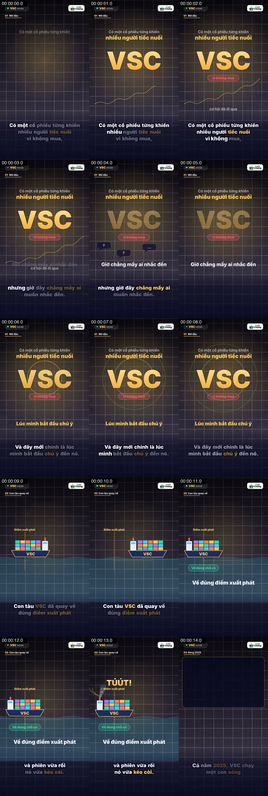
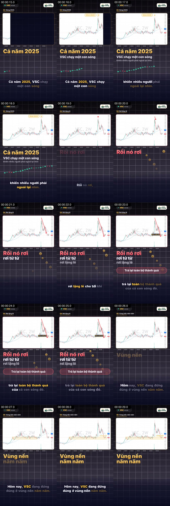
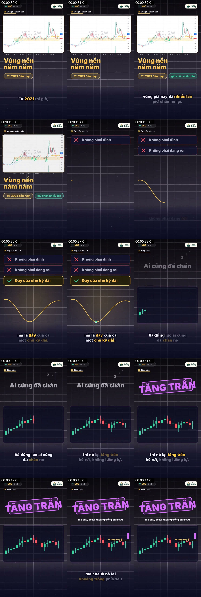
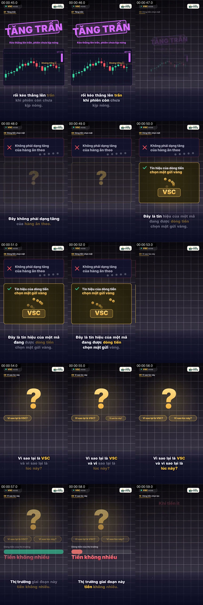
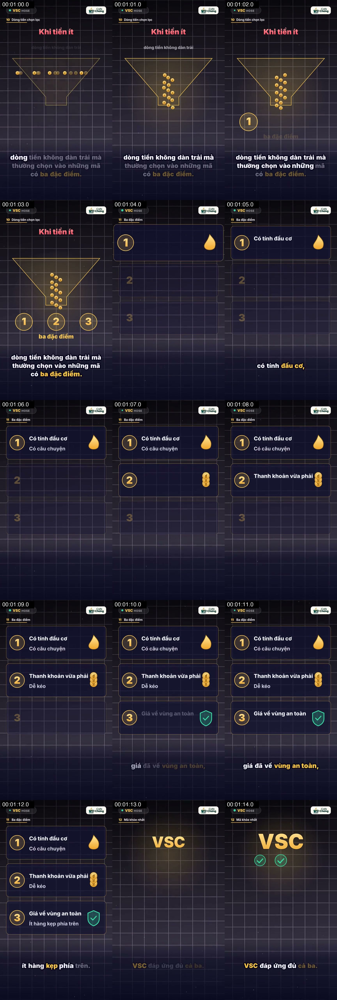
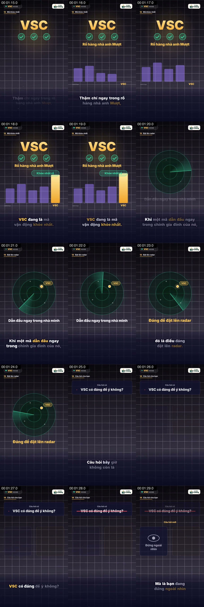
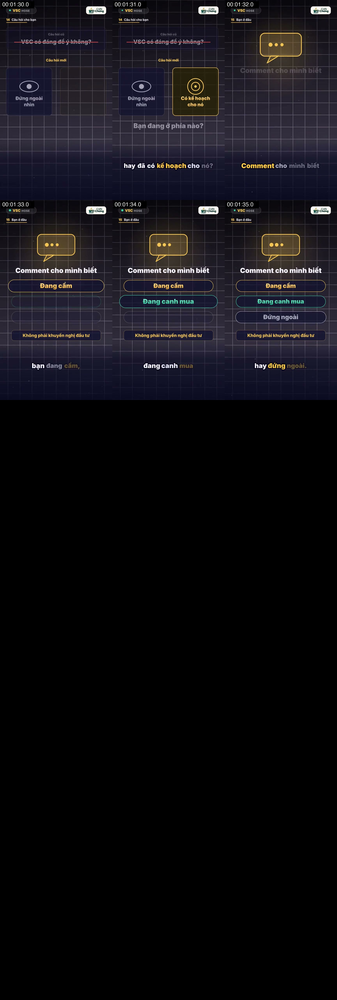
Có một cổ phiếu từng khiến rất nhiều người tiếc nuối vì không mua, nhưng giờ đây lại chẳng mấy ai muốn nhắc đến. Và đây mới chính là lúc mình bắt đầu chú ý đến nó. Con tàu VSC đã quay về đúng điểm xuất phát và phiên vừa rồi nó vừa kéo còi. Cả năm 2025, VSC chạy một con sóng khiến nhiều người phải ngoái lại nhìn. Rồi nó rơi, rơi từ từ, rơi lặng lẽ, cho tới khi trả lại toàn bộ thành quả của cả con sóng đó. Hôm nay, VSC đang đứng đúng ở vùng nền 5 năm. Từ 2021 tới giờ, vùng giá này đã nhiều lần giữ chân nó lại. Không phải đỉnh, không phải đang rơi, mà là đáy của cả một chu kỳ dài. Và đúng lúc ai cũng đã chán nó, thì nó lại tăng chân bỏ rơi không lưỡng lự. Mở cửa là bỏ lại khoảng trống phía sau, rồi kéo thẳng lên chân thì phiên còn chưa kịp nóng. Đây không phải dạng tăng của hàng ăn theo. Đây là tín hiệu của một mã đang được dòng tiền trọn mặt gửi vàng. Vì sao lại là VSC và vì sao lại là lúc này? Thị trường giai đoạn này tiền không nhiều. Khi tiền ít, dòng tiền không giàn trải mà thường chọn vào những mã có 3 đặc điểm. Một, có tính đầu cơ, có câu chuyện. Hai, thanh khoản vừa phải, dễ kéo. Ba, giá đã về vùng an toàn, ít hàng kẹp phía trên. VSC đáp ứng đủ cả ba. Thậm chí, ngay trong rổ hàng nhà anh Mượt, VSC đang là mã vận động khỏe nhất. Khi một mã dẫn đầu ngay trong chính gia đình của nó, đó là điều đáng để đặt lên radar. Câu hỏi bây giờ không còn là VSC có đáng để ý không, mà là bạn đang đứng ngoài nhìn hay đã có kế hoạch cho nó? Comment cho mình biết bạn đang cầm, đang canh mua hay đứng ngoài.
3 giây đầu nói“Năm 2025, VIC, VHM”
beat 1,7s0 beat trong 3s đầu207 âm tiết/phút82s-17,2 LUFS
Beat đầu: 0,0s cắt cứng “Năm” → 6,5s pop (phóng to) “đóng” → 73,2s trượt phải “Bạn” → 77,1s rơi xuống “hay” → 79,7s mờ dần “thế” → 80,5s mờ dần → 80,7s trượt trái “Hãy” → 81,6s cắt cứng “nhé!”
Khung hình (11 lưới) & lời thoại
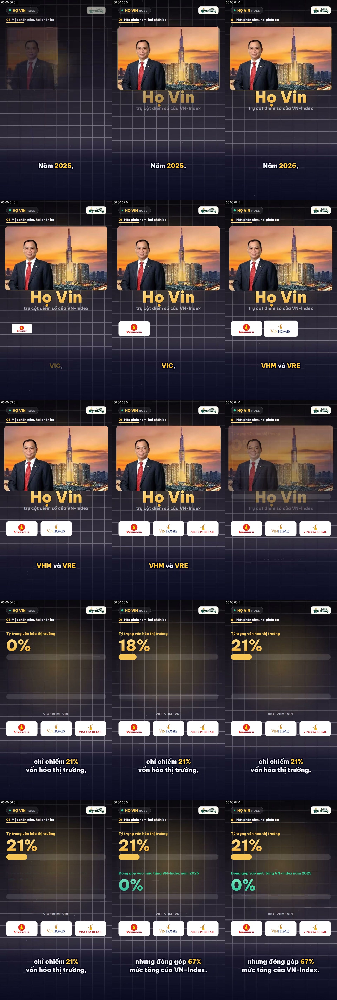
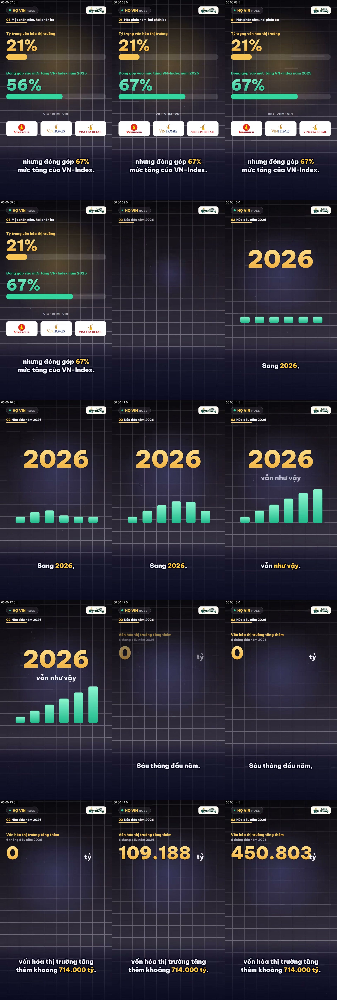
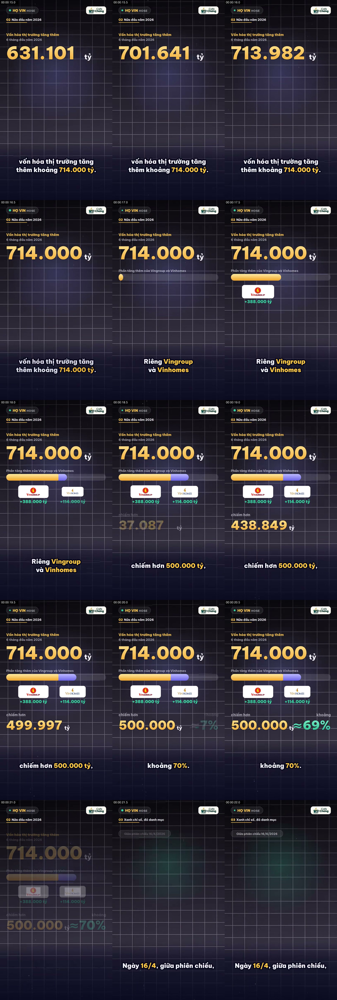
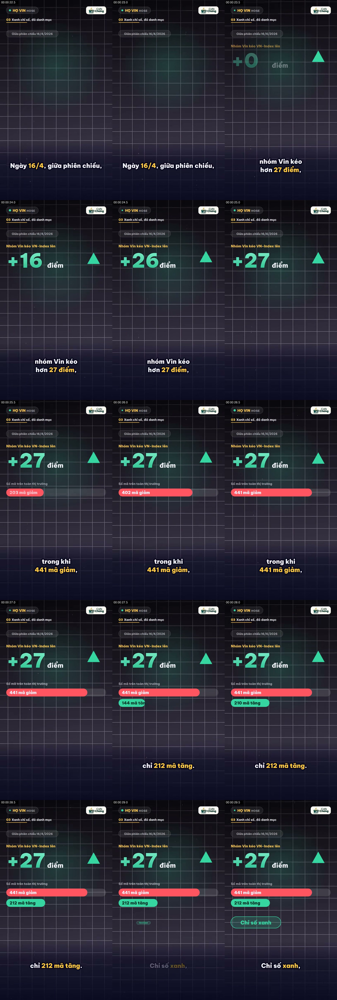
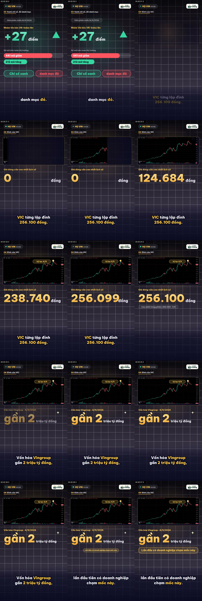
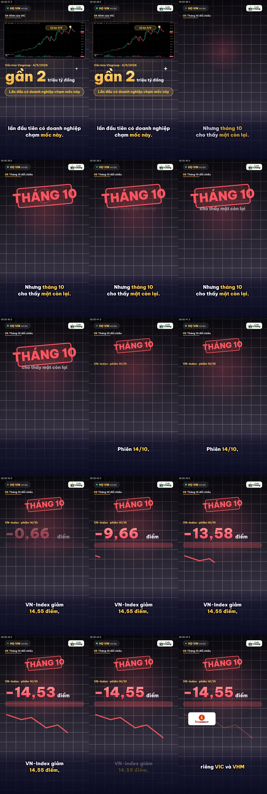
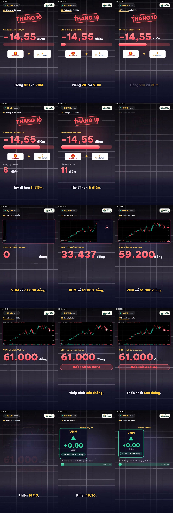
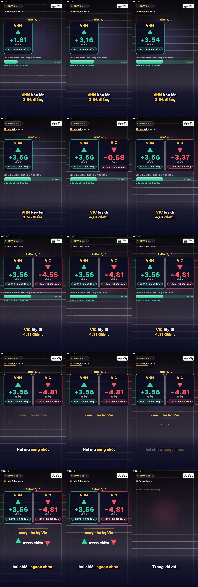
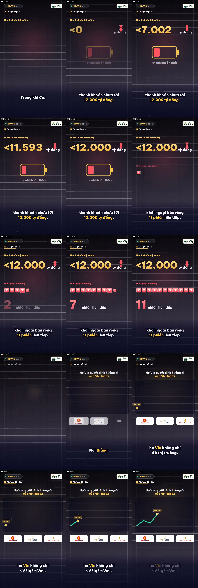
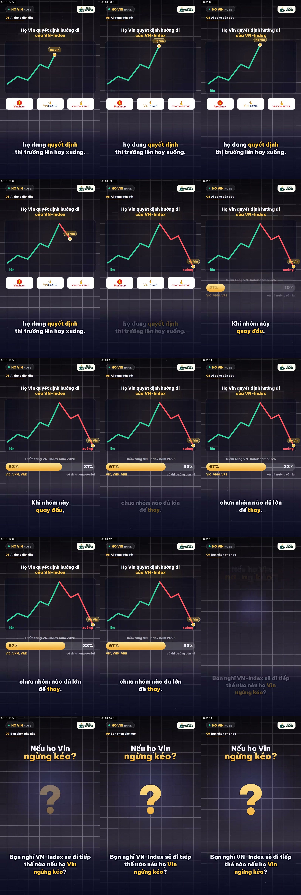
Năm 2025, VIC, VHM và VRE chỉ chiếm 21% vốn hóa thị trường nhưng đóng góp 67% mức tăng của VN Index. Sáng 2026, vẫn như vậy. 6 tháng đầu năm, vốn hóa toàn thị trường tăng thêm khoảng 714.000 tỷ đồng. Riêng Vingroup và Vinhomes chiếm hơn 500.000 tỷ, khoảng 70%. Ngày 16 tháng 4, giữa phiên chiều, nhóm VIN kéo hơn 27 điểm trong khi 441 mã giảm, chỉ 212 mã tăng. Chỉ số xanh, danh mục đỏ. VIC từng lập đỉnh 256.100 đồng. Cộn hóa Vingroup gần 2 triệu tỷ đồng. Lần đầu tiên có doanh nghiệp chạm mốc này. Nhưng tháng 10 cho thấy mặt còn lại. Phiên 14 tháng 10, VN Index giảm 14,55 điểm. Riêng VIC và VHM lấy đi hơn 11 điểm. VHM về 61.000 đồng, thấp nhất 6 tháng. Phiên 16 tháng 10, VHM kéo lên 3,56 điểm. VIC lấy đi 4,81 điểm. Hai mã cùng nhà, hai chiều ngược nhau. Trong khi đó, thanh khoản chưa tới 12.000 tỷ đồng. Khối ngoại bán dòng 11 phiên liên tiếp. Nói thẳng, họ Ving không chỉ đỡ thị trường. Họ đang quyết định thị trường lên hay xuống. Khi nhóm này quay đầu, chưa nhóm nào đủ lớn để thay. Bạn nghĩ VN Index sẽ đi tiếp thế nào nếu họ Ving ngừng kéo, gánh được hay gục? Liệu thị trường sẽ sụt giảm nặng nề như thế nào? Hãy bình luận cho chúng tôi biết nhé!